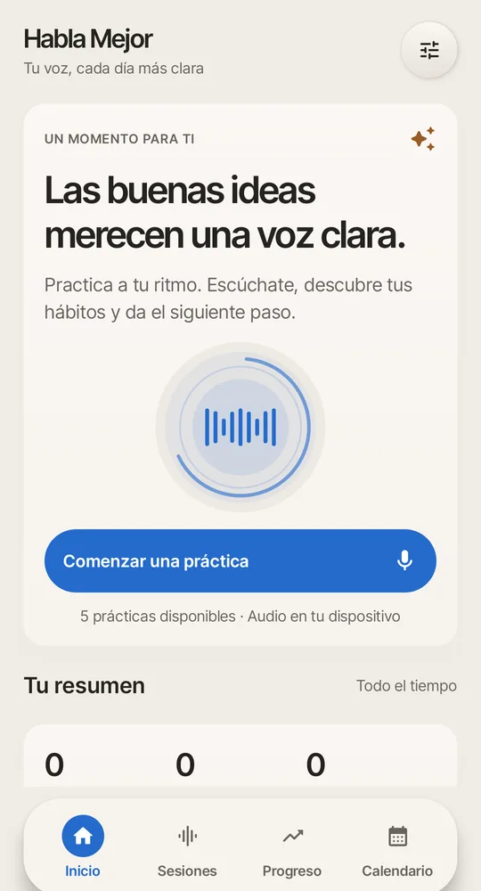
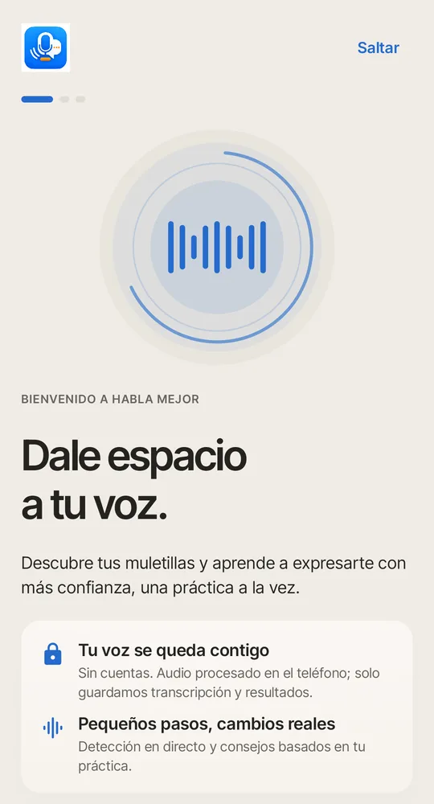
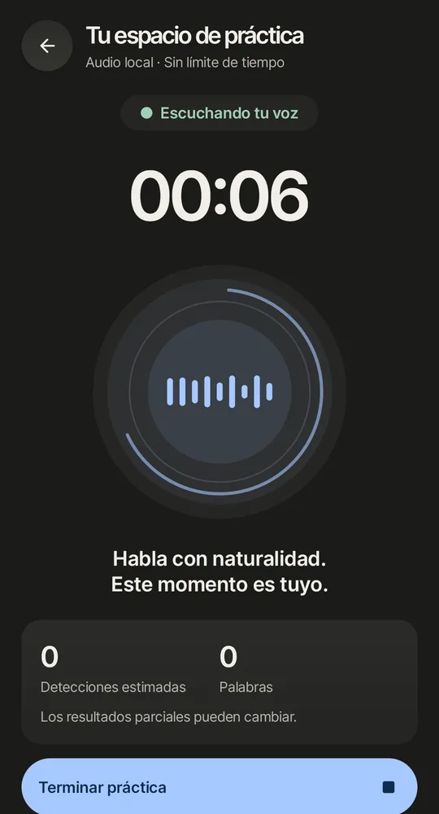
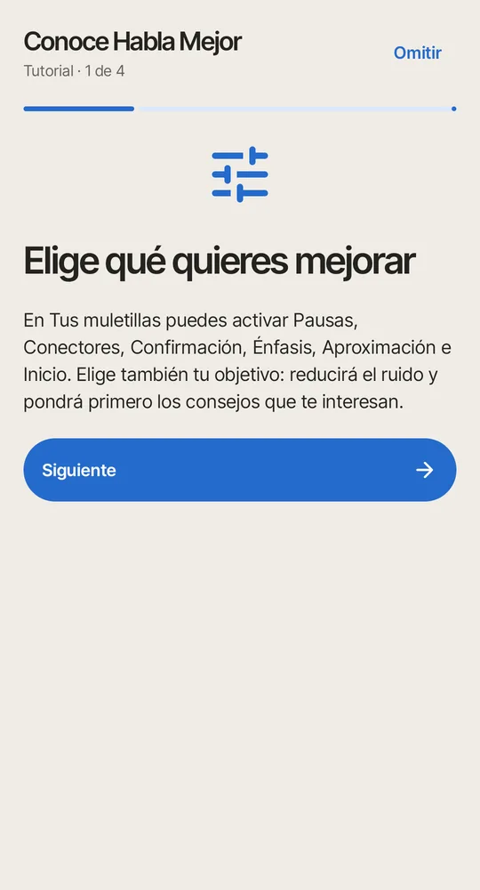
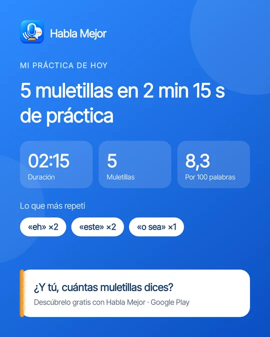
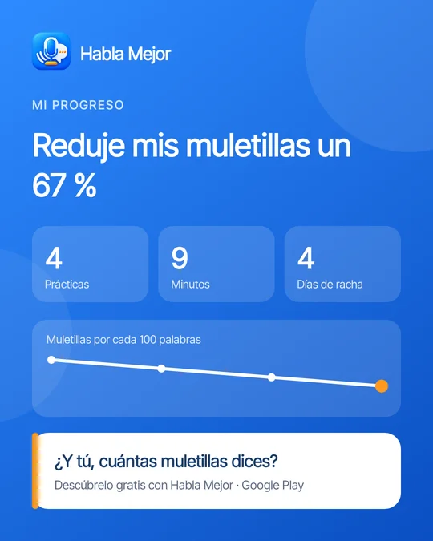

Habla Mejor
Habla Mejor
Entrenador de voz para Android
Las buenas ideas merecen una voz clara.
Habla Mejor escucha cómo hablas y te muestra tus muletillas en tiempo real: «eh», «este», «o sea», «mmm» y las que tú elijas. Practica a tu ritmo y mira cómo mejoras.
Descargar en Google PlayGratis · Sin cuentas · Android 8.0 o superior

Todo lo que necesitas para hablar mejor
Ideal para presentaciones, entrevistas, clases o simplemente para expresarte con más confianza.
Detección en tiempo real
Mientras hablas, ves cuántas muletillas usas y cuáles son. Sin límite de tiempo.
Detecta titubeos
Reconoce también los «ehhh» y «mmm» que otros reconocedores ignoran o confunden con ruido.
Tu voz se queda contigo
El reconocimiento funciona dentro de tu teléfono. El audio no se graba ni se envía a ningún servidor.
Mide tu progreso
Muletillas por cada 100 palabras, ritmo, rachas y consejos según tu objetivo.
Recordatorios
Elige tus días y tu hora, y te recordamos dedicar unos minutos a tu voz.
Comparte tus logros
Crea una imagen con tu resultado o tu progreso y compártela en tus redes.
Así se ve
Un diseño tranquilo, con modo oscuro, pensado para practicar sin presión.





Privacidad primero
Tu voz nunca sale de tu teléfono. El reconocimiento se hace en el dispositivo, y tus prácticas y transcripciones se guardan solo ahí. Puedes borrarlas cuando quieras.
La app es gratuita gracias a la publicidad de Google AdMob y usa Google Analytics para mejorar. Estos servicios reciben datos técnicos y de uso, nunca tu audio.